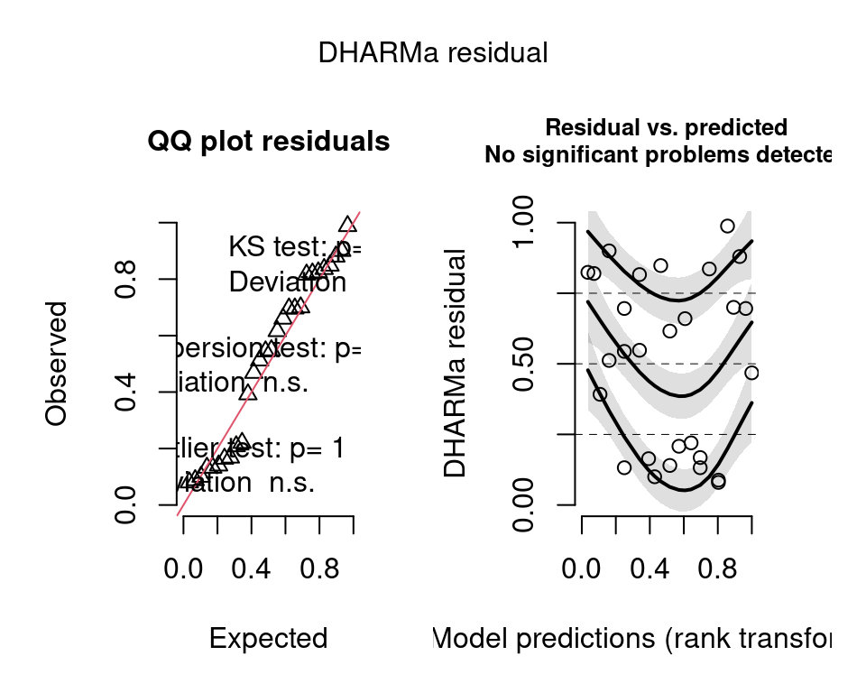
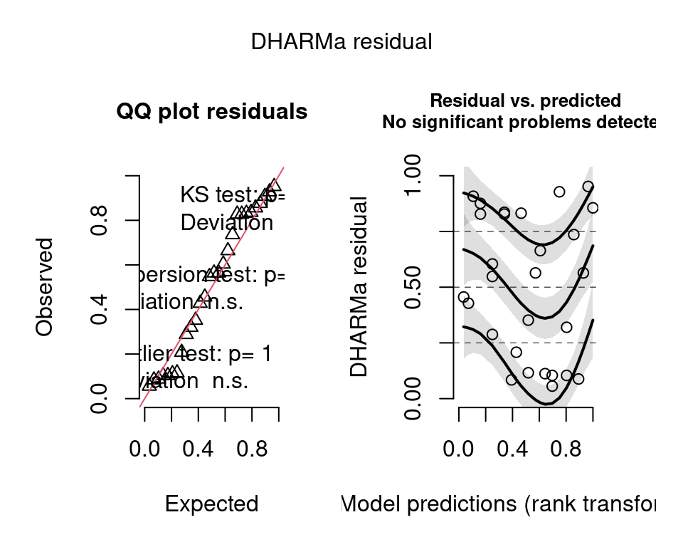
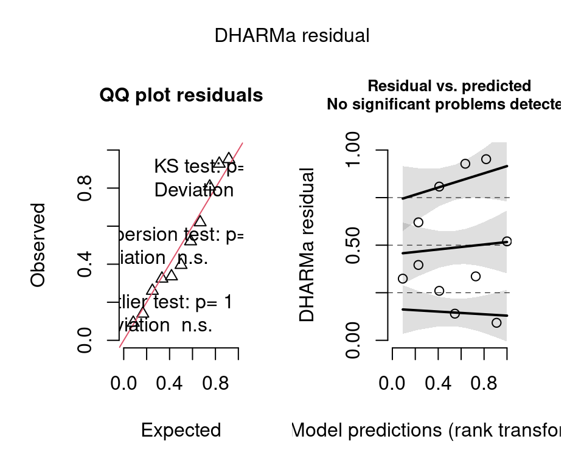
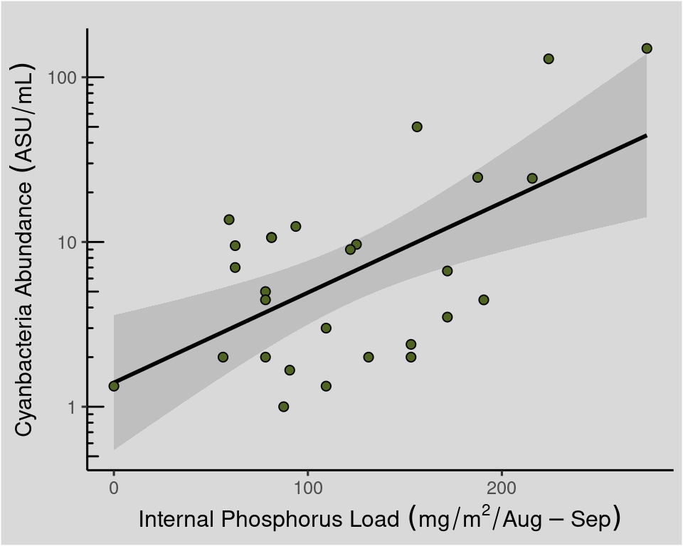

knitr::opts_chunk$set(out.width = "60%", fig.width = 5, fig.height = 4)
library(tidyverse)
library(readxl)
library(janitor)
library(patchwork)
library(ggrepel)
library(ggtext)
d <- read_excel("Data/Steff Fig 5.3 Erie_3.xlsx", skip = 2) |>
clean_names() |>
select("year", "int_load" = 2, "chl" = 3, "abun" = 4, "index" = 6) |>
mutate(abun = abun + 1)
blu <- "blue3" # Standard point colourFig 5.3 Lake Erie
Setup
Stats
m1 <- lm(log10(chl) ~ int_load, data = d)
summary(m1)
Call:
lm(formula = log10(chl) ~ int_load, data = d)
Residuals:
Min 1Q Median 3Q Max
-0.38134 -0.24669 0.03074 0.19097 0.57337
Coefficients:
Estimate Std. Error t value Pr(>|t|)
(Intercept) -0.2321771 0.1081123 -2.148 0.041245 *
int_load 0.0034251 0.0007959 4.303 0.000211 ***
---
Signif. codes: 0 '***' 0.001 '**' 0.01 '*' 0.05 '.' 0.1 ' ' 1
Residual standard error: 0.2546 on 26 degrees of freedom
Multiple R-squared: 0.416, Adjusted R-squared: 0.3935
F-statistic: 18.52 on 1 and 26 DF, p-value: 0.0002112m2 <- lm(log10(abun) ~ int_load, data = d)
summary(m2)
Call:
lm(formula = log10(abun) ~ int_load, data = d)
Residuals:
Min 1Q Median 3Q Max
-0.68221 -0.44974 0.06845 0.43581 0.74070
Coefficients:
Estimate Std. Error t value Pr(>|t|)
(Intercept) 0.146199 0.199422 0.733 0.47005
int_load 0.005465 0.001468 3.722 0.00096 ***
---
Signif. codes: 0 '***' 0.001 '**' 0.01 '*' 0.05 '.' 0.1 ' ' 1
Residual standard error: 0.4696 on 26 degrees of freedom
Multiple R-squared: 0.3476, Adjusted R-squared: 0.3226
F-statistic: 13.86 on 1 and 26 DF, p-value: 0.0009603m3 <- lm(index ~ int_load, data = d)
summary(m3)
Call:
lm(formula = index ~ int_load, data = d)
Residuals:
Min 1Q Median 3Q Max
-1.1453 -0.4889 -0.2253 0.5339 1.3404
Coefficients:
Estimate Std. Error t value Pr(>|t|)
(Intercept) -0.190337 0.649628 -0.293 0.77617
int_load 0.020565 0.005647 3.642 0.00539 **
---
Signif. codes: 0 '***' 0.001 '**' 0.01 '*' 0.05 '.' 0.1 ' ' 1
Residual standard error: 0.8498 on 9 degrees of freedom
(17 observations deleted due to missingness)
Multiple R-squared: 0.5957, Adjusted R-squared: 0.5508
F-statistic: 13.26 on 1 and 9 DF, p-value: 0.005386options("scipen" = 999)
stats <- tibble(model = list(m1, m2, m3),
names = c("chl", "abun", "index")) |>
mutate(r2 = map_dbl(model, \(x) summary(x)$r.squared),
r2 = format(round(r2, 2)),
n = map_int(model, \(x) length(summary(x)$residuals)),
p = map_dbl(model, \(x) summary(x)$coefficients[2,4]),
p = case_when(p < 0.0001 ~ "<0.0001",
p < 0.001 ~ "<0.001",
p < 0.01 ~ "<0.01"),
label = paste0("n==", n, "*','~R^2=='", r2, "'*','~p", p))DHARMa::simulateResiduals(m1, plot = TRUE)
Object of Class DHARMa with simulated residuals based on 250 simulations with refit = FALSE . See ?DHARMa::simulateResiduals for help.
Scaled residual values: 0.696 0.836 0.88 0.988 0.696 0.168 0.088 0.14 0.82 0.1 0.132 0.824 0.164 0.22 0.616 0.66 0.208 0.392 0.08 0.512 ...DHARMa::simulateResiduals(m2, plot = TRUE)
Object of Class DHARMa with simulated residuals based on 250 simulations with refit = FALSE . See ?DHARMa::simulateResiduals for help.
Scaled residual values: 0.952 0.928 0.564 0.736 0.604 0.056 0.32 0.116 0.428 0.208 0.288 0.456 0.084 0.112 0.352 0.664 0.564 0.908 0.104 0.828 ...DHARMa::simulateResiduals(m3, plot = TRUE)
Object of Class DHARMa with simulated residuals based on 250 simulations with refit = FALSE . See ?DHARMa::simulateResiduals for help.
Scaled residual values: 0.808 0.336 0.324 0.092 0.62 0.14 0.396 0.26 0.952 0.928 0.52Figure
# y-Log base plot
g0 <- ggplot(d, aes(x = int_load)) +
theme_classic(base_size = 12) +
theme(plot.margin = margin(), plot.tag.position = c("topleft")) +
scale_x_continuous(name = bquote('Internal load'~(mg/m^2/Aug-Sep)))
d <- mutate(
d,
y_lab = case_when(year == 1999 ~ chl + 0.25,
year == 2000 ~ chl + 0.15,
year == 1995 ~ chl + 0.05,
year == 1997 ~ chl + 0.1,
year == 1989 ~ chl + 0.1,
year == 2007 ~ chl - 0.075,
year == 2011 ~ chl + 0.15,
year == 2012 ~ chl + 0.7,
TRUE ~ chl),
x_lab = case_when(year == 2012 ~ int_load - 15,
TRUE ~ int_load))
g1 <- g0 +
stat_smooth(aes(y = chl), method = "lm", se = TRUE, na.rm = TRUE, colour = "black") +
geom_point(aes(y = chl), colour = blu) +
geom_text(data = d, aes(x = x_lab, y = y_lab, label = year), size = 3.2, colour = "white", fontface = "bold",
vjust = 1, hjust = -0.15) +
geom_text(data = d, aes(x = x_lab, y = y_lab, label = year), size = 3, vjust = 1, hjust = -0.2) +
scale_y_log10(breaks = c(0.1, 1, 10)) +
labs(y = bquote("Chlorophyll"~(mu*g/L))) +
annotation_logticks(sides = "l") +
annotate(geom = "text", x = 0, y = Inf, hjust = 0, vjust = 1.1,
label = stats$label[stats$names == "chl"], parse = TRUE)
d <- mutate(
d,
y_lab = case_when(year == 2011 ~ abun + 1,
year == 2005 ~ abun - 1,
year == 2009 ~ abun + 1.7,
year == 2008 ~ abun + 0.2,
year == 1987 ~ abun + 5,
year == 1989 ~ abun + 1,
year == 2000 ~ abun + 1.5,
year == 2007 ~ abun + 0.5,
year == 1995 ~ abun + 0.25,
year == 1995 ~ abun + 0.25,
TRUE ~ abun),
x_lab = case_when(year == 2012 ~ int_load - 18,
TRUE ~ int_load))
g2 <- g0 +
stat_smooth(aes(y = abun), method = "lm", se = TRUE, na.rm = TRUE, colour = "black") +
scale_y_log10(breaks = c(1, 10, 100)) +
geom_point(aes(y = abun), colour = blu) +
geom_text(data = d, aes(x = x_lab, y = y_lab, label = year), size = 3.2, colour = "white", fontface = "bold",
vjust = 1, hjust = -0.15) +
geom_text(data = d, aes(x = x_lab, y = y_lab, label = year), size = 3, vjust = 1, hjust = -0.2) +
labs(y = bquote("Cyanbacteria abundance"~(ASU/mL))) +
annotation_logticks(sides = "l") +
annotate(geom = "text", x = 0, y = Inf, hjust = 0, vjust = 1.1,
label = stats$label[stats$names == "abun"], parse = TRUE)
d <- mutate(
d,
y_lab = case_when(
year == 2004 ~ index + 0.25,
year == 2006 ~ index + 0.25,
year == 2007 ~ index + 0.15,
TRUE ~ index),
x_lab = int_load)
g3 <- g0 +
stat_smooth(aes(y = index), method = "lm", se = TRUE, na.rm = TRUE, colour = "black") +
scale_y_continuous(breaks = 1:5) +
geom_point(aes(y = index), colour = blu) +
geom_text(data = d, aes(x = x_lab, y = y_lab, label = year), size = 3.2, colour = "white", fontface = "bold",
vjust = 1, hjust = -0.15) +
geom_text(data = d, aes(x = x_lab, y = y_lab, label = year), size = 3, vjust = 1, hjust = -0.2) +
labs(y = "Cyanbacteria Index") +
annotate(geom = "text", x = 0, y = Inf, hjust = 0, vjust = 1.1,
label = stats$label[stats$names == "index"], parse = TRUE)
g1 / g2 / g3 + plot_layout(axis_titles = "collect") + plot_annotation(tag_levels = "A")`geom_smooth()` using formula = 'y ~ x'
`geom_smooth()` using formula = 'y ~ x'
`geom_smooth()` using formula = 'y ~ x'Warning: Removed 17 rows containing missing values or values outside the scale range
(`geom_point()`).Warning: Removed 17 rows containing missing values or values outside the scale range
(`geom_text()`).
Removed 17 rows containing missing values or values outside the scale range
(`geom_text()`).
ggplot(d, aes(x = int_load)) +
theme_classic(base_size = 12) +
theme(plot.margin = margin(l = 5, t = 15, r = 5, b = 5), plot.background = element_rect(fill = "grey85"),
panel.background = element_rect(fill = "grey85")) +
stat_smooth(aes(y = abun), method = "lm", se = TRUE, na.rm = TRUE, colour = "black") +
geom_point(aes(y = abun), fill = "#506424", size = 2, shape = 21) +
labs(y = bquote("Cyanbacteria Abundance"~(ASU/mL))) +
annotation_logticks(sides = "l") +
scale_y_log10(breaks = c(1, 10, 100)) +
scale_x_continuous(name = bquote('Internal Phosphorus Load'~(mg/m^2/Aug-Sep)))`geom_smooth()` using formula = 'y ~ x'
ggsave("title.pdf", width = 6, height = 3.5, dpi = 1000)`geom_smooth()` using formula = 'y ~ x'ggsave("title.png", width = 6, height = 3.5, dpi = 1000)`geom_smooth()` using formula = 'y ~ x'